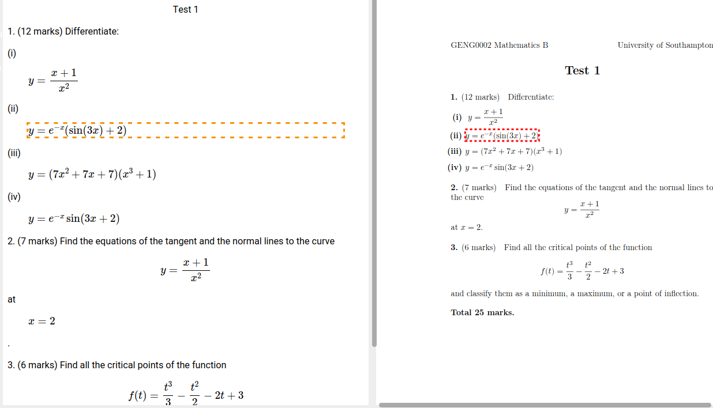

LaTeX/accessibility notes
We are required by law to make the materials that we produce "accessible". The standards are either WCAG 2.1 or WCAG 2.2 (depending on when do you read this).
The pdfs we produce from LaTeX sources are generally not accessible at all.
A couple of ways to produce accessible materials are listed on Helen's pages; at the moment (2024-07-11T10:33:05) they're aimed at getting a html output from either LaTeX or other (e.g. quarto / markdown / etc) sources.
There does exist such a thing as "an accessible pdf", it's referred to as a "tagged pdf". This means it's a pdf with extra semantic information embedded, in addition to the traditional positional information.
Software like Adobe Acrobat can take any pdf, and with a click of a button turn it into a tagged one, but the result isn't always "practical", meaning the tagging it produces will be actually worthless for a person trying to use it.
An example of a badly tagged pdf (right: rendered pdf, left: a html version of the same pdf based on the tags in the pdf)
An example of a well tagged pdf:

These screenshots above were produced with ngpdf.com. As of now (2024-07-11T11:11:47) it's possible to inspect a pdf for free, clicking 'Try the demo', upload a pdf, and then click "go to editor".
Can we get a (well) tagged pdf from LaTeX sources?
By default LaTeX compilers produce untagged pdfs, with no semantic information at all.
As of 2024-07-11T10:44:50, we indeed can, to a certain extent.
There's a reddit post from mid-2023, which says that LaTeX packages like accessibility and axessibility are obsolete (as in, unmaintaned and not really working). However it does suggest a solution, based on recent work of Ulrike Franke, on the LaTeX compiler.
To let the compiler know that we want tagging, put this as the first line in your LaTeX source:
\DocumentMetadata{pdfversion=2.0,lang=en-UK,testphase=phase-III,testphase=math}
(If you leave out testphase=math, the text will be tagged, but the formulas won't. The testphase parameters tell the compiler which components of the tagging engine should be used.)
You will also need to use as recent compiler as you can (to give you an example, the formula tagging support has visibly improved in the last four months before writing this text on 2024-07-11T10:51:37). So update your installs! If you can, use the -dev version of the compiler(s).
I personally recommend using lualatex-dev (I think that's the one they're doing the development on), but as of now (2024-07-11T10:52:39), pdflatex-dev or pdflatex may also work.
That's it.
Caveats
Do expect that a lot of packages will break. So your mileage may vary, and a fair amount of work will be required, depending on how dirty are the tricks that you're using in your LaTeX sources.
A list of ... remarks
(This is actually the reason for the existence of this page.)
-
Things that I find don't work very well (yet):
-
examclass (numbering and spacing is sometimes off?). -
Various itemize/enumerate enhancements e.g.
enumitemandparalist(will probably run, but spacing and numbering may not work as expected) -- so I reverted to using the default ones, and messing with the spacing manually: using\vspace{-1ex}before anitemize, and\def\compactitemize{\setlength{\itemsep}{0pt}\setlength{\topsep}{0pt}\setlength{\partopsep}{0pt}% \setlength{\parsep}{0pt}\setlength{\parskip}{0pt}} \def\romanenumerate{\def\theenumi{\roman{enumi}}\def\labelenumi{(\theenumi)}}then manually using\begin{itemize}\compactitemize ...and\begin{enumerate}\romanenumerate .... empheqpackage. Just use\boxed{...}with\begin{aligned} ...\end{aligned}if needed.arraypackage and using\newcolumntypeto get automatic maths wrapping in tables. Just use the standard ones (r,c,l) and wrap the material into dollars.
-
- Check your spacing and item/enum numbering. For me there are changes to this (compared with the untagged pdf) relatively often.
- Do not start a paragraph with displayed math. (Seems to throw off the paragraph tagging engine.)
-
Don't use double-dollars for displayed math. Use at least
\[...\], or better\begin{equation*}...\end{equation*}. (You can replace all d-dollar pairs with the above in every decent text editor using regular expressions. E.g. invim, it's:%s/\$\$\(\_.\{-}\)\$\$/\\begin{equation*}\1\\end{equation*}/g) -
One should use
hyperrefand set some doc metadata:\usepackage[pdfauthor="JŠ", pdfusetitle, colorlinks=true]{hyperref}Setting the title explicitly later:\hypersetup{ pdftitle = {Test 1}, } -
One can inject "custom tags" like this:
\tagstructbegin{tag=H1}Test 1\tagmcend. This is useful for short-ish documents that don't use the traditional structure with\section{..}(and then Ally complains that the doc doesn't have structure). -
Not accessibility related, just recording my lualatex setup. (NB: lualatex uses system-wide ttf/otf fonts, rather than postscript or metafont ones.)
\usepackage{polyglossia} \setmainlanguage[variant=british]{english} % change to your favorite language \usepackage[babel]{microtype} % lua/xe-latex % fonts can be customized here \usepackage{unicode-math} \defaultfontfeatures{Ligatures=TeX} % \setmainfont{TeX Gyre Pagella} % \setsansfont{Linux Biolinum O}[Scale=MatchLowercase] % \setmonofont{Cascadia Mono}[Scale=MatchLowercase] % \setmathfont{TeX Gyre Pagella Math}[Scale=MatchLowercase] \usepackage{amsmath, amssymb, mathtools, mathrsfs} -
Not accessibility related: how do I include/exclude solutions.
\newenvironment{solution}{\medskip\noindent\textbf{Solution. }}{\smallskip\hrule\medskip} \usepackage{versions} \excludeversion{solution} % comment this out to include solutions - Blackboard Ultra Sandbox module request